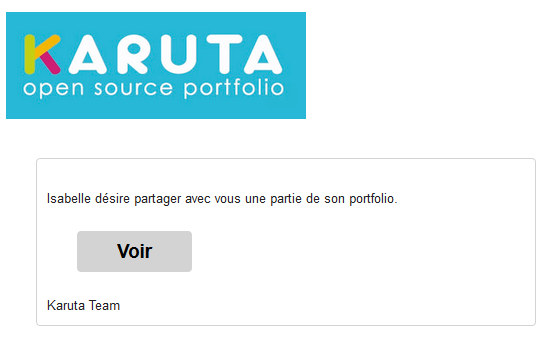

Des portfolios complets, des parties de portfolios ou même des ressources spécifiques peuvent être partagées par un usager donné à l’aide d’un bouton. Les usagers qui recevront le partage en seront avisés par courriel (le courriel contient un hyperlien vers le portfolio partagé).
Ils pourront alors intervenir dans le portfolio selon le rôle qui leur sera assigné. Le partage permet deux possibilités :

Ainsi, si dans son portfolio l’étudiant clique sur Partager avec un pair, le système envoie un courriel à un pair avec un hyperlien vers une section du portfolio dans laquelle le pair pourra inscrire son commentaire.
La spécification du partage se fait dans l’onglet métadonnées d’une section, d’une page, d’une sous-section ou même d’une ressource.
Les conditions de ce partage sont très sophistiquées; voici quelques cas d’utilisation usuels :
Partager
rôle qui partage,rôle destinataire,rôles et/ou courriels,niveau (0-4),durée de vie du lien (en heures),button label@en/libellé du bouton@fr[,condition][;autre partage]
etudiant,all,?,4,unlimited,Partager@fr
En construction...